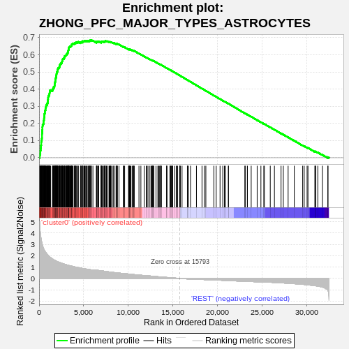
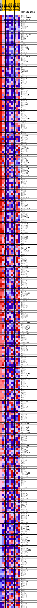
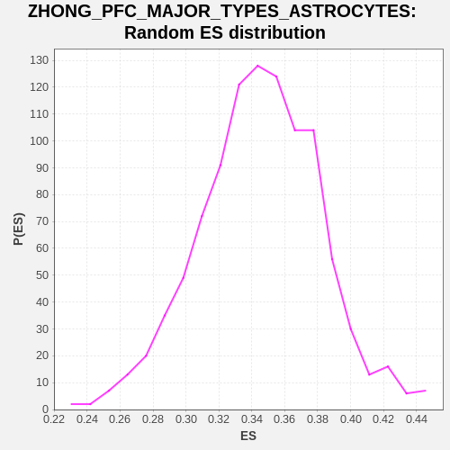

| | | Dataset | GTE_table.phenotypes_gte.cls#cluster0_versus_REST |
| Phenotype | phenotypes_gte.cls#cluster0_versus_REST |
| Upregulated in class | cluster0 |
| GeneSet | ZHONG_PFC_MAJOR_TYPES_ASTROCYTES |
| Enrichment Score (ES) | 0.68536603 |
| Normalized Enrichment Score (NES) | 1.9870025 |
| Nominal p-value | 0.0 |
| FDR q-value | 0.0 |
| FWER p-Value | 0.0 |
Table: GSEA Results Summary

Fig 1: Enrichment plot: ZHONG_PFC_MAJOR_TYPES_ASTROCYTES
Profile of the Running ES Score & Positions of GeneSet Members on the Rank Ordered List
| SYMBOL | TITLE | RANK IN GENE LIST | RANK METRIC SCORE | RUNNING ES | CORE ENRICHMENT | | 1 | PRODH | na | 65 | 4.786 | 0.0112 | Yes |
| 2 | LINC00943 | na | 99 | 4.367 | 0.0222 | Yes |
| 3 | SLC39A12 | na | 141 | 4.015 | 0.0320 | Yes |
| 4 | GDPD2 | na | 144 | 3.963 | 0.0428 | Yes |
| 5 | GFAP | na | 186 | 3.701 | 0.0517 | Yes |
| 6 | RFX4 | na | 205 | 3.604 | 0.0611 | Yes |
| 7 | TRIM47 | na | 212 | 3.551 | 0.0707 | Yes |
| 8 | PLCD1 | na | 234 | 3.462 | 0.0796 | Yes |
| 9 | LRIG1 | na | 242 | 3.444 | 0.0889 | Yes |
| 10 | ID4 | na | 249 | 3.421 | 0.0981 | Yes |
| 11 | ADCYAP1R1 | na | 297 | 3.190 | 0.1054 | Yes |
| 12 | BMPR1B | na | 310 | 3.154 | 0.1137 | Yes |
| 13 | RGMA | na | 324 | 3.108 | 0.1219 | Yes |
| 14 | SPON1 | na | 326 | 3.099 | 0.1304 | Yes |
| 15 | LGI1 | na | 329 | 3.087 | 0.1388 | Yes |
| 16 | ITM2C | na | 338 | 3.073 | 0.1471 | Yes |
| 17 | AQP4 | na | 349 | 3.031 | 0.1551 | Yes |
| 18 | LRRC3B | na | 362 | 2.974 | 0.1629 | Yes |
| 19 | C2orf72 | na | 375 | 2.919 | 0.1706 | Yes |
| 20 | DTNA | na | 377 | 2.916 | 0.1786 | Yes |
| 21 | FADS2 | na | 389 | 2.890 | 0.1862 | Yes |
| 22 | FXYD1 | na | 402 | 2.861 | 0.1937 | Yes |
| 23 | SLC25A18 | na | 475 | 2.677 | 0.1989 | Yes |
| 24 | MLC1 | na | 494 | 2.648 | 0.2056 | Yes |
| 25 | BDH2 | na | 497 | 2.645 | 0.2128 | Yes |
| 26 | ATP1B2 | na | 527 | 2.602 | 0.2191 | Yes |
| 27 | ACSBG1 | na | 554 | 2.539 | 0.2253 | Yes |
| 28 | SFXN5 | na | 555 | 2.538 | 0.2323 | Yes |
| 29 | HEY1 | na | 589 | 2.479 | 0.2381 | Yes |
| 30 | MASP1 | na | 596 | 2.467 | 0.2447 | Yes |
| 31 | CAMK2G | na | 602 | 2.459 | 0.2513 | Yes |
| 32 | DBX2 | na | 617 | 2.441 | 0.2576 | Yes |
| 33 | ID1 | na | 649 | 2.400 | 0.2632 | Yes |
| 34 | PBXIP1 | na | 653 | 2.392 | 0.2697 | Yes |
| 35 | EDNRB | na | 658 | 2.388 | 0.2762 | Yes |
| 36 | AGT | na | 715 | 2.326 | 0.2809 | Yes |
| 37 | ALDOC | na | 720 | 2.317 | 0.2871 | Yes |
| 38 | GATM | na | 726 | 2.314 | 0.2933 | Yes |
| 39 | LIX1 | na | 779 | 2.250 | 0.2979 | Yes |
| 40 | ELN | na | 791 | 2.242 | 0.3037 | Yes |
| 41 | HOPX | na | 816 | 2.219 | 0.3091 | Yes |
| 42 | B3GLCT | na | 907 | 2.127 | 0.3122 | Yes |
| 43 | RGS20 | na | 911 | 2.126 | 0.3179 | Yes |
| 44 | SLC15A2 | na | 978 | 2.067 | 0.3216 | Yes |
| 45 | GJA1 | na | 980 | 2.067 | 0.3272 | Yes |
| 46 | SLCO1C1 | na | 987 | 2.064 | 0.3327 | Yes |
| 47 | RAMP3 | na | 995 | 2.056 | 0.3382 | Yes |
| 48 | ZFP36L2 | na | 1010 | 2.043 | 0.3434 | Yes |
| 49 | SLC1A2 | na | 1014 | 2.041 | 0.3489 | Yes |
| 50 | MMD2 | na | 1020 | 2.033 | 0.3544 | Yes |
| 51 | F3 | na | 1046 | 2.018 | 0.3591 | Yes |
| 52 | RAMP1 | na | 1081 | 1.988 | 0.3636 | Yes |
| 53 | CLU | na | 1153 | 1.934 | 0.3667 | Yes |
| 54 | SOX9 | na | 1161 | 1.928 | 0.3718 | Yes |
| 55 | LIFR | na | 1164 | 1.924 | 0.3770 | Yes |
| 56 | ACSL6 | na | 1191 | 1.900 | 0.3815 | Yes |
| 57 | ARHGEF26 | na | 1196 | 1.897 | 0.3866 | Yes |
| 58 | MSMO1 | na | 1202 | 1.894 | 0.3916 | Yes |
| 59 | SDC3 | na | 1296 | 1.831 | 0.3938 | Yes |
| 60 | GNG12 | na | 1500 | 1.717 | 0.3922 | Yes |
| 61 | DKK3 | na | 1525 | 1.706 | 0.3961 | Yes |
| 62 | NTRK2 | na | 1529 | 1.703 | 0.4007 | Yes |
| 63 | TRIL | na | 1591 | 1.672 | 0.4035 | Yes |
| 64 | CNN3 | na | 1612 | 1.661 | 0.4074 | Yes |
| 65 | GLUD1 | na | 1616 | 1.660 | 0.4119 | Yes |
| 66 | TSPAN6 | na | 1710 | 1.620 | 0.4135 | Yes |
| 67 | ANOS1 | na | 1715 | 1.619 | 0.4178 | Yes |
| 68 | CXCL14 | na | 1737 | 1.608 | 0.4216 | Yes |
| 69 | NCAN | na | 1741 | 1.605 | 0.4259 | Yes |
| 70 | ROBO3 | na | 1743 | 1.605 | 0.4303 | Yes |
| 71 | PEA15 | na | 1764 | 1.599 | 0.4341 | Yes |
| 72 | VCAM1 | na | 1780 | 1.594 | 0.4380 | Yes |
| 73 | CASTOR1 | na | 1800 | 1.585 | 0.4418 | Yes |
| 74 | STON2 | na | 1807 | 1.583 | 0.4460 | Yes |
| 75 | SLC13A5 | na | 1818 | 1.580 | 0.4500 | Yes |
| 76 | GPX3 | na | 1820 | 1.580 | 0.4543 | Yes |
| 77 | CYP51A1 | na | 1841 | 1.570 | 0.4580 | Yes |
| 78 | LRRC17 | na | 1866 | 1.558 | 0.4616 | Yes |
| 79 | GNPTG | na | 1871 | 1.556 | 0.4657 | Yes |
| 80 | PDLIM3 | na | 1907 | 1.543 | 0.4689 | Yes |
| 81 | RAP1GAP | na | 1912 | 1.541 | 0.4730 | Yes |
| 82 | OLFM2 | na | 1928 | 1.537 | 0.4768 | Yes |
| 83 | PDLIM5 | na | 1931 | 1.535 | 0.4810 | Yes |
| 84 | METTL7A | na | 1948 | 1.526 | 0.4847 | Yes |
| 85 | SEMA6A | na | 1958 | 1.523 | 0.4886 | Yes |
| 86 | PTTG1IP | na | 1963 | 1.522 | 0.4926 | Yes |
| 87 | TSPAN3 | na | 1983 | 1.515 | 0.4962 | Yes |
| 88 | GPR137B | na | 1996 | 1.508 | 0.5000 | Yes |
| 89 | CST3 | na | 2057 | 1.484 | 0.5022 | Yes |
| 90 | BBS2 | na | 2066 | 1.481 | 0.5061 | Yes |
| 91 | ABCD3 | na | 2073 | 1.478 | 0.5099 | Yes |
| 92 | MT1E | na | 2075 | 1.477 | 0.5140 | Yes |
| 93 | TTYH1 | na | 2113 | 1.464 | 0.5169 | Yes |
| 94 | THBS3 | na | 2114 | 1.464 | 0.5209 | Yes |
| 95 | AASS | na | 2203 | 1.435 | 0.5221 | Yes |
| 96 | FERMT2 | na | 2221 | 1.429 | 0.5255 | Yes |
| 97 | COMT | na | 2275 | 1.412 | 0.5278 | Yes |
| 98 | DDR1 | na | 2287 | 1.408 | 0.5313 | Yes |
| 99 | PON2 | na | 2302 | 1.404 | 0.5347 | Yes |
| 100 | FAM107A | na | 2309 | 1.402 | 0.5384 | Yes |
| 101 | DDAH1 | na | 2332 | 1.396 | 0.5416 | Yes |
| 102 | EEPD1 | na | 2354 | 1.388 | 0.5448 | Yes |
| 103 | DBI | na | 2415 | 1.372 | 0.5467 | Yes |
| 104 | SLC1A3 | na | 2441 | 1.360 | 0.5496 | Yes |
| 105 | TCIM | na | 2507 | 1.342 | 0.5513 | Yes |
| 106 | HSD17B12 | na | 2542 | 1.333 | 0.5539 | Yes |
| 107 | PLEC | na | 2551 | 1.332 | 0.5574 | Yes |
| 108 | SPARCL1 | na | 2575 | 1.322 | 0.5603 | Yes |
| 109 | NOTCH2 | na | 2595 | 1.316 | 0.5633 | Yes |
| 110 | SEMA6D | na | 2619 | 1.309 | 0.5662 | Yes |
| 111 | C3orf70 | na | 2622 | 1.307 | 0.5697 | Yes |
| 112 | ADGRG1 | na | 2636 | 1.303 | 0.5729 | Yes |
| 113 | NDRG2 | na | 2670 | 1.293 | 0.5755 | Yes |
| 114 | TP53I3 | na | 2710 | 1.286 | 0.5778 | Yes |
| 115 | SLC4A4 | na | 2805 | 1.264 | 0.5784 | Yes |
| 116 | CCDC80 | na | 2816 | 1.261 | 0.5815 | Yes |
| 117 | PLIN3 | na | 2845 | 1.253 | 0.5841 | Yes |
| 118 | VIM | na | 2846 | 1.253 | 0.5876 | Yes |
| 119 | EFEMP2 | na | 2847 | 1.253 | 0.5910 | Yes |
| 120 | TNC | na | 2899 | 1.236 | 0.5928 | Yes |
| 121 | ALDH6A1 | na | 2969 | 1.222 | 0.5941 | Yes |
| 122 | LRRTM3 | na | 2997 | 1.216 | 0.5966 | Yes |
| 123 | FABP7 | na | 3038 | 1.208 | 0.5986 | Yes |
| 124 | FABP5 | na | 3077 | 1.198 | 0.6008 | Yes |
| 125 | EMC2 | na | 3086 | 1.196 | 0.6038 | Yes |
| 126 | ARNTL | na | 3124 | 1.187 | 0.6059 | Yes |
| 127 | PPP1R16A | na | 3185 | 1.174 | 0.6073 | Yes |
| 128 | ITGAV | na | 3209 | 1.169 | 0.6098 | Yes |
| 129 | ATP13A4 | na | 3218 | 1.167 | 0.6128 | Yes |
| 130 | RIT2 | na | 3222 | 1.167 | 0.6159 | Yes |
| 131 | HMGCS1 | na | 3226 | 1.166 | 0.6190 | Yes |
| 132 | CD9 | na | 3238 | 1.163 | 0.6219 | Yes |
| 133 | SNX3 | na | 3270 | 1.156 | 0.6241 | Yes |
| 134 | ANXA5 | na | 3286 | 1.153 | 0.6268 | Yes |
| 135 | ELOVL5 | na | 3304 | 1.149 | 0.6294 | Yes |
| 136 | SCRG1 | na | 3305 | 1.149 | 0.6326 | Yes |
| 137 | RASSF4 | na | 3315 | 1.147 | 0.6355 | Yes |
| 138 | SMIM30 | na | 3337 | 1.141 | 0.6380 | Yes |
| 139 | MRC2 | na | 3347 | 1.139 | 0.6408 | Yes |
| 140 | GPR37L1 | na | 3359 | 1.136 | 0.6436 | Yes |
| 141 | SYPL1 | na | 3389 | 1.131 | 0.6458 | Yes |
| 142 | GPM6B | na | 3464 | 1.119 | 0.6466 | Yes |
| 143 | ZFYVE21 | na | 3477 | 1.116 | 0.6493 | Yes |
| 144 | PTPRZ1 | na | 3562 | 1.099 | 0.6497 | Yes |
| 145 | PLPP3 | na | 3606 | 1.092 | 0.6514 | Yes |
| 146 | HES1 | na | 3613 | 1.091 | 0.6542 | Yes |
| 147 | HADHB | na | 3638 | 1.087 | 0.6565 | Yes |
| 148 | RAB34 | na | 3646 | 1.085 | 0.6593 | Yes |
| 149 | CLDN10 | na | 3662 | 1.082 | 0.6618 | Yes |
| 150 | ID2 | na | 3725 | 1.069 | 0.6628 | Yes |
| 151 | HSPB1 | na | 3787 | 1.058 | 0.6638 | Yes |
| 152 | TBC1D10A | na | 3810 | 1.054 | 0.6660 | Yes |
| 153 | BCAP29 | na | 3956 | 1.024 | 0.6643 | Yes |
| 154 | DAG1 | na | 3971 | 1.022 | 0.6667 | Yes |
| 155 | S100A13 | na | 4005 | 1.015 | 0.6685 | Yes |
| 156 | TIMP3 | na | 4106 | 0.997 | 0.6681 | Yes |
| 157 | GLUL | na | 4121 | 0.993 | 0.6704 | Yes |
| 158 | PRCP | na | 4129 | 0.992 | 0.6730 | Yes |
| 159 | PRSS35 | na | 4208 | 0.981 | 0.6732 | Yes |
| 160 | LAMB2 | na | 4326 | 0.962 | 0.6722 | Yes |
| 161 | PTN | na | 4371 | 0.953 | 0.6735 | Yes |
| 162 | QKI | na | 4404 | 0.950 | 0.6751 | Yes |
| 163 | DOK5 | na | 4645 | 0.914 | 0.6702 | Yes |
| 164 | TEX264 | na | 4653 | 0.913 | 0.6725 | Yes |
| 165 | LEPROT | na | 4711 | 0.902 | 0.6732 | Yes |
| 166 | ABAT | na | 4745 | 0.897 | 0.6746 | Yes |
| 167 | ITPR2 | na | 4856 | 0.881 | 0.6737 | Yes |
| 168 | SERPINB6 | na | 4890 | 0.876 | 0.6750 | Yes |
| 169 | FAT1 | na | 4897 | 0.875 | 0.6773 | Yes |
| 170 | TOR1AIP1 | na | 4914 | 0.872 | 0.6792 | Yes |
| 171 | TNFRSF19 | na | 5019 | 0.858 | 0.6783 | Yes |
| 172 | IFITM3 | na | 5050 | 0.854 | 0.6797 | Yes |
| 173 | TM7SF2 | na | 5129 | 0.844 | 0.6796 | Yes |
| 174 | TSC22D4 | na | 5170 | 0.839 | 0.6807 | Yes |
| 175 | RHOC | na | 5251 | 0.830 | 0.6805 | Yes |
| 176 | RAB31 | na | 5315 | 0.821 | 0.6808 | Yes |
| 177 | CPNE5 | na | 5371 | 0.814 | 0.6813 | Yes |
| 178 | CD63 | na | 5499 | 0.795 | 0.6796 | Yes |
| 179 | ADORA2B | na | 5502 | 0.795 | 0.6817 | Yes |
| 180 | TIMP1 | na | 5626 | 0.779 | 0.6800 | Yes |
| 181 | LGALS1 | na | 5664 | 0.773 | 0.6810 | Yes |
| 182 | KCNE5 | na | 5667 | 0.773 | 0.6831 | Yes |
| 183 | GPRC5B | na | 5777 | 0.760 | 0.6818 | Yes |
| 184 | YIF1A | na | 5794 | 0.758 | 0.6834 | Yes |
| 185 | CBR1 | na | 5808 | 0.756 | 0.6850 | Yes |
| 186 | BCAN | na | 5865 | 0.750 | 0.6854 | Yes |
| 187 | LRP4 | na | 6037 | 0.730 | 0.6821 | No |
| 188 | IL33 | na | 6439 | 0.725 | 0.6716 | No |
| 189 | SOX2 | na | 6441 | 0.725 | 0.6736 | No |
| 190 | PMP22 | na | 6442 | 0.725 | 0.6756 | No |
| 191 | LGALS3 | na | 6468 | 0.723 | 0.6768 | No |
| 192 | PLTP | na | 6565 | 0.712 | 0.6758 | No |
| 193 | JUN | na | 6611 | 0.707 | 0.6763 | No |
| 194 | HNMT | na | 6652 | 0.704 | 0.6770 | No |
| 195 | UBL3 | na | 6679 | 0.701 | 0.6781 | No |
| 196 | CDC42EP4 | na | 6954 | 0.672 | 0.6715 | No |
| 197 | PHYHIPL | na | 6960 | 0.672 | 0.6732 | No |
| 198 | SIRPA | na | 6962 | 0.671 | 0.6750 | No |
| 199 | CDC42EP1 | na | 6967 | 0.671 | 0.6767 | No |
| 200 | MT3 | na | 6975 | 0.669 | 0.6783 | No |
| 201 | RCN1 | na | 7058 | 0.661 | 0.6776 | No |
| 202 | MAGT1 | na | 7174 | 0.649 | 0.6758 | No |
| 203 | ELOVL2 | na | 7188 | 0.648 | 0.6772 | No |
| 204 | PSAT1 | na | 7300 | 0.635 | 0.6755 | No |
| 205 | DHCR7 | na | 7342 | 0.629 | 0.6760 | No |
| 206 | HES4 | na | 7373 | 0.626 | 0.6767 | No |
| 207 | CTSL | na | 7398 | 0.624 | 0.6777 | No |
| 208 | DIO2 | na | 7411 | 0.622 | 0.6791 | No |
| 209 | GNG5 | na | 7422 | 0.621 | 0.6805 | No |
| 210 | DNER | na | 7549 | 0.608 | 0.6782 | No |
| 211 | NKAIN4 | na | 7596 | 0.603 | 0.6785 | No |
| 212 | ENHO | na | 7642 | 0.597 | 0.6787 | No |
| 213 | ADD3 | na | 7837 | 0.575 | 0.6743 | No |
| 214 | SPATA6 | na | 7866 | 0.572 | 0.6750 | No |
| 215 | CRYL1 | na | 7945 | 0.565 | 0.6741 | No |
| 216 | APOE | na | 8025 | 0.557 | 0.6732 | No |
| 217 | IFI27L1 | na | 8036 | 0.556 | 0.6744 | No |
| 218 | LRRN3 | na | 8128 | 0.547 | 0.6731 | No |
| 219 | ALPL | na | 8295 | 0.530 | 0.6694 | No |
| 220 | FBLN2 | na | 8388 | 0.521 | 0.6680 | No |
| 221 | EFNA1 | na | 8402 | 0.519 | 0.6690 | No |
| 222 | ZFP36L1 | na | 8630 | 0.499 | 0.6633 | No |
| 223 | KLHDC8A | na | 8657 | 0.496 | 0.6639 | No |
| 224 | TFPI | na | 8680 | 0.494 | 0.6645 | No |
| 225 | S100A16 | na | 8771 | 0.485 | 0.6631 | No |
| 226 | BTBD17 | na | 8775 | 0.485 | 0.6643 | No |
| 227 | SLC9A3R1 | na | 8958 | 0.470 | 0.6600 | No |
| 228 | LGALS3BP | na | 9440 | 0.437 | 0.6462 | No |
| 229 | SNX5 | na | 9490 | 0.433 | 0.6459 | No |
| 230 | S100B | na | 9594 | 0.424 | 0.6438 | No |
| 231 | MYORG | na | 10029 | 0.388 | 0.6314 | No |
| 232 | PREX1 | na | 10058 | 0.385 | 0.6316 | No |
| 233 | AK4 | na | 10103 | 0.381 | 0.6313 | No |
| 234 | PDPN | na | 10105 | 0.380 | 0.6323 | No |
| 235 | LRRC10B | na | 10135 | 0.378 | 0.6325 | No |
| 236 | PLEKHB1 | na | 10207 | 0.371 | 0.6313 | No |
| 237 | MT2A | na | 10293 | 0.364 | 0.6296 | No |
| 238 | TSPAN7 | na | 10438 | 0.352 | 0.6261 | No |
| 239 | SERPINE2 | na | 10559 | 0.342 | 0.6233 | No |
| 240 | B2M | na | 10570 | 0.341 | 0.6240 | No |
| 241 | ATP1A2 | na | 10621 | 0.337 | 0.6233 | No |
| 242 | IDI1 | na | 10675 | 0.334 | 0.6226 | No |
| 243 | G6PC3 | na | 11200 | 0.299 | 0.6072 | No |
| 244 | OAT | na | 11416 | 0.284 | 0.6013 | No |
| 245 | PRR5 | na | 11787 | 0.256 | 0.5905 | No |
| 246 | HES5 | na | 12026 | 0.241 | 0.5837 | No |
| 247 | MYO10 | na | 12076 | 0.237 | 0.5829 | No |
| 248 | CBS | na | 12214 | 0.229 | 0.5792 | No |
| 249 | MEIS1 | na | 12425 | 0.215 | 0.5733 | No |
| 250 | C1orf122 | na | 12565 | 0.205 | 0.5695 | No |
| 251 | TECPR2 | na | 12672 | 0.197 | 0.5668 | No |
| 252 | SHISA4 | na | 12681 | 0.197 | 0.5671 | No |
| 253 | BCHE | na | 12702 | 0.194 | 0.5670 | No |
| 254 | DCN | na | 12779 | 0.189 | 0.5652 | No |
| 255 | NPNT | na | 12841 | 0.186 | 0.5638 | No |
| 256 | SCD | na | 12845 | 0.185 | 0.5642 | No |
| 257 | LITAF | na | 13112 | 0.165 | 0.5564 | No |
| 258 | TTYH2 | na | 13318 | 0.153 | 0.5504 | No |
| 259 | P3H4 | na | 13414 | 0.146 | 0.5479 | No |
| 260 | HTRA1 | na | 13485 | 0.142 | 0.5461 | No |
| 261 | HLA-A | na | 13617 | 0.132 | 0.5424 | No |
| 262 | KCNJ10 | na | 13644 | 0.130 | 0.5419 | No |
| 263 | VEPH1 | na | 13659 | 0.129 | 0.5419 | No |
| 264 | SLC3A2 | na | 13719 | 0.125 | 0.5404 | No |
| 265 | BMP7 | na | 14305 | 0.089 | 0.5224 | No |
| 266 | CSPG5 | na | 14319 | 0.088 | 0.5223 | No |
| 267 | HAPLN1 | na | 14325 | 0.088 | 0.5224 | No |
| 268 | ETV1 | na | 14671 | 0.067 | 0.5118 | No |
| 269 | SASH1 | na | 14696 | 0.065 | 0.5113 | No |
| 270 | SPRY2 | na | 14744 | 0.062 | 0.5100 | No |
| 271 | SLC1A4 | na | 14822 | 0.056 | 0.5077 | No |
| 272 | MFGE8 | na | 14884 | 0.052 | 0.5060 | No |
| 273 | FAM181B | na | 14949 | 0.048 | 0.5041 | No |
| 274 | NLGN3 | na | 14986 | 0.046 | 0.5031 | No |
| 275 | PHGDH | na | 15223 | 0.033 | 0.4959 | No |
| 276 | SOAT1 | na | 15395 | 0.023 | 0.4906 | No |
| 277 | NOTCH3 | na | 15440 | 0.020 | 0.4893 | No |
| 278 | SLC6A1 | na | 15526 | 0.015 | 0.4867 | No |
| 279 | SLC38A3 | na | 15762 | 0.002 | 0.4794 | No |
| 280 | HLA-C | na | 15774 | 0.001 | 0.4791 | No |
| 281 | SELENBP1 | na | 15843 | -0.001 | 0.4770 | No |
| 282 | LUZP2 | na | 16032 | -0.011 | 0.4712 | No |
| 283 | PAQR8 | na | 16630 | -0.045 | 0.4527 | No |
| 284 | CA12 | na | 16647 | -0.045 | 0.4524 | No |
| 285 | SLITRK2 | na | 16753 | -0.052 | 0.4492 | No |
| 286 | S1PR1 | na | 16982 | -0.064 | 0.4423 | No |
| 287 | TMEM132B | na | 17646 | -0.071 | 0.4219 | No |
| 288 | PNPLA3 | na | 18268 | -0.092 | 0.4029 | No |
| 289 | IGFBP4 | na | 18543 | -0.103 | 0.3946 | No |
| 290 | P4HA1 | na | 18700 | -0.109 | 0.3901 | No |
| 291 | PDGFRB | na | 19598 | -0.131 | 0.3626 | No |
| 292 | LINC01351 | na | 19859 | -0.141 | 0.3549 | No |
| 293 | ADGRB1 | na | 20291 | -0.157 | 0.3419 | No |
| 294 | PLAGL1 | na | 20597 | -0.169 | 0.3329 | No |
| 295 | BRINP3 | na | 20780 | -0.176 | 0.3277 | No |
| 296 | TCF7L2 | na | 20904 | -0.181 | 0.3244 | No |
| 297 | SEZ6L | na | 21230 | -0.192 | 0.3148 | No |
| 298 | LIPA | na | 21232 | -0.192 | 0.3153 | No |
| 299 | TRIB2 | na | 23069 | -0.253 | 0.2590 | No |
| 300 | WSCD1 | na | 23150 | -0.257 | 0.2572 | No |
| 301 | MGLL | na | 23363 | -0.264 | 0.2513 | No |
| 302 | LRATD2 | na | 23784 | -0.277 | 0.2391 | No |
| 303 | PHACTR2 | na | 24453 | -0.297 | 0.2191 | No |
| 304 | GNG7 | na | 24874 | -0.308 | 0.2069 | No |
| 305 | DCXR | na | 25198 | -0.316 | 0.1977 | No |
| 306 | GNG11 | na | 25264 | -0.318 | 0.1966 | No |
| 307 | AIF1L | na | 25922 | -0.341 | 0.1771 | No |
| 308 | GRM3 | na | 26390 | -0.359 | 0.1636 | No |
| 309 | HAPLN3 | na | 27132 | -0.393 | 0.1416 | No |
| 310 | ABHD3 | na | 27385 | -0.403 | 0.1349 | No |
| 311 | HLA-B | na | 27925 | -0.428 | 0.1194 | No |
| 312 | SOX8 | na | 28613 | -0.465 | 0.0993 | No |
| 313 | LYN | na | 29556 | -0.523 | 0.0715 | No |
| 314 | RGCC | na | 29727 | -0.534 | 0.0676 | No |
| 315 | NT5E | na | 30053 | -0.562 | 0.0591 | No |
| 316 | SPRY1 | na | 30150 | -0.569 | 0.0577 | No |
| 317 | APBB2 | na | 30922 | -0.638 | 0.0355 | No |
| 318 | GRB14 | na | 30976 | -0.644 | 0.0356 | No |
| 319 | ETV5 | na | 31013 | -0.648 | 0.0363 | No |
| 320 | GULP1 | na | 31257 | -0.677 | 0.0306 | No |
| 321 | ALCAM | na | 31774 | -0.765 | 0.0167 | No |
| 322 | CD82 | na | 32387 | -1.058 | 0.0005 | No |
| 323 | EFHD2 | na | 32389 | -1.065 | 0.0034 | No |
Table: GSEA details [plain text format]

Fig 2: ZHONG_PFC_MAJOR_TYPES_ASTROCYTES
Blue-Pink O' Gram in the Space of the Analyzed GeneSet

Fig 3: ZHONG_PFC_MAJOR_TYPES_ASTROCYTES: Random ES distribution
Gene set null distribution of ES for ZHONG_PFC_MAJOR_TYPES_ASTROCYTES